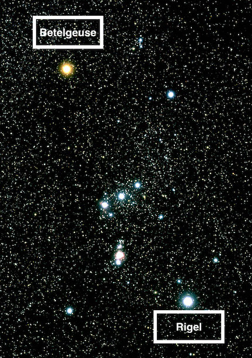

Starclassification
How Are Stars Classified?¶
Stars are classified based on their visual traits, like colour, and physical traits, like size and mass. Star classification is a way to categorize stars, either based on their color and/or size and mass. Since stars have so much variety in between them, classifying stars allows astronomers to find a star with certain characteristics much easier. Astronomers also classify stars in order to better understand the different types of stars in both our galaxy and our universe.
Why is classification needed?¶
Astronomers classify stars in order to make it easier to find a specific star amongst millions and to better understand how different stars behave.
Classification¶
Color based¶
One way of classifying stars is based on their color.
- M: Red Stars
- K: Orange Stars
- G: Yellow Stars
- F: Yellowish-White Stars
- A: White Stars
- B: Blue-White Stars
- O: Blue Stars
For example, our own Sun which is yellow in color is classified as a "G-Type" star.
Size/Mass based¶
Another way of classifying stars is based on their size and/or mass.
- Dwarfs: "Smaller" stars that make up the magority of stars in the universe.
- Giants: Larger stars that tend to be the aged phase of dwarf stars.
- Supergiants: Even larger stars that are the aged phase of Giant stars.
- Hypergiants: Extremely large stars that are the aged phase of O & B supergiants.
Blended Classifications¶
In reality, both classifications are combined in order to ensure there are no overlaps. For example, in the constellation Orion, the red star Betelgeuse is classified as a "M-type Supergiant", and the blue-white star Rigel is a "B-type Supergiant". You can see both together in the picture below.

Summary¶
Stars are classified in many ways, which can help if one star needs to be found out of a datapool of millions. Thank you for reading this blog! If you want to research further into these subjects, I would suggest visiting.